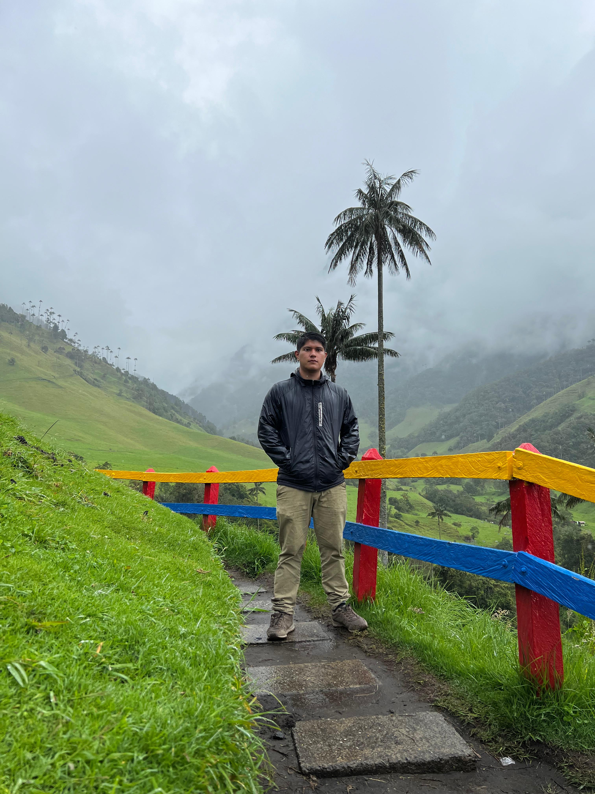

>
Soy Ingeniero Multimedia y estudio el Máster en Diseño de Experiencia de Usuario en UNIR. Trabajo en dos frentes que se complementan: diseño UX/UI y edición de video.
En UX, investigo a las personas antes de diseñar: entrevistas, encuestas, pruebas de usabilidad y evaluaciones heurísticas que se convierten en plataformas y apps móviles prototipadas en Figma, accesibles y fáciles de usar.
En video, llevo las piezas de principio a fin: guion, edición, motion graphics, color y audio. Uso la IA como copiloto para investigar, iterar y producir más rápido.
año en diseño UX: plataformas y apps móviles
año en producción audiovisual freelance y práctica
marcas y organizaciones con las que he trabajado

Viajes en moto, fotografía y deporte. Cada ruta es un storyboard y cada persona que conozco, un insight.
Que las personas entiendan, disfruten y actúen, ya sea navegando una app o viendo un video de 30 segundos.
Plataformas web y apps móviles diseñadas desde la investigación, prototipadas en Figma y validadas con usuarios reales.
Contenido para marcas y redes sociales, llevado de principio a fin: idea, rodaje, edición, color, sonido y entrega por plataforma.
Integro inteligencia artificial en ambos procesos para trabajar más rápido y con mejores decisiones:
Universidad Internacional de La Rioja (UNIR)
City University Miami
Universidad de San Buenaventura Cali
Un asistente que conoce mi perfil. Pregúntale por mis métodos de UX, mi experiencia en video, mis estudios o cómo contactarme.